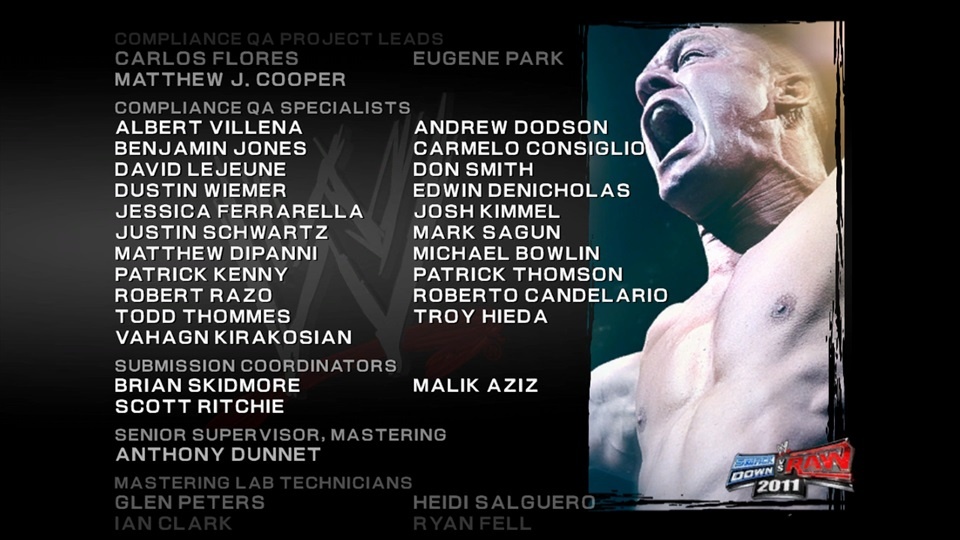
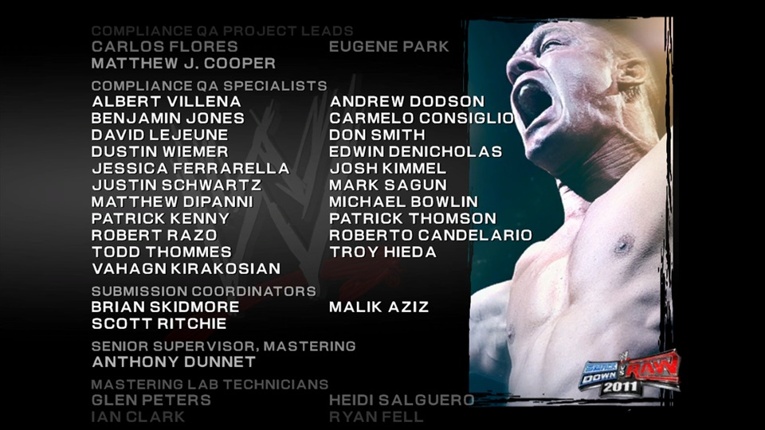

Quality Assurance
My time working in the Quality Assurance department at THQ included a wide varity of testing methodologies on a variety of platforms. Each platform had its own unique set of challenges that became more complex as the platforms had a greater online component. It was common to encounter an issue that would need to be fixed differently across multiple platforms, in particular when addressing compliance related issues.
Benefits of Quality Assurance
- Higher product quality resulting in increased customer satisfaction.
- Reduced necessity for product support.
- Reduced costs by catching issues early.
- Improved brand reputation.
- Enhanced operational efficiency.
Testing
- Develop custom test plans outlining scope and objectives to ensure complete testing coverage.
- Work with multiple teams to cross check if issues are platform exclusive.
- Write detailed bug report on every unique issue encountered during testing process.
- Re-test issues to narrow down specific triggers.
- Run regression testing on previously reported issues to verify if they have been fixed when a new build is received.
- Work with teams to run complex network tests across multiple devices.
- Work with localization specialists to ensure non-English text and audio are translated correctly.
- Setup soak tests to run overnight to ensure software stability.
Compliance Testing
- Incorporate many of the same testing methodologies of standard testing.
- Focus on platform specific specifications detailed in the Technical Certification Requirements (Microsoft) or the Technical Requirements Checklist (Sony).
- Communicate with compliance specialists working on other platforms to ensure the resolution for the indicated issue is clear to the developer.
Certification
- Work with project managers to submit game concept details for initial approval from Sony and Microsoft.
- Collect and organize all project details, documentation, files, and other submission materials.
- Track down any missing details, documentation, files, required for submission.
- Provide regular updates to all stakeholders regarding outstanding issues preventing submission.
- Coordinate with multiple contacts to evaluate submission status.
- Send out a company wide notification email adhering to strict formatting requirements when submission is complete.
Compliance Supervision
- Regularly communicate with my team to keep up to date on a projects status.
- Maintain a detailed database on all projects.
- Assign compliance specialists to projects as needed and make adjustments as submission date approaches.
- Evaluate compliance specialists performance and provide written and in person reviews discussing areas for improvement as well as highlighing accomplishments.
- Explain the implications of severe issues to project managers and executives to help them make more informed decisions.
- Coordinate with multiple points of contact throughout the development process to continually reevaluate project status.
 
